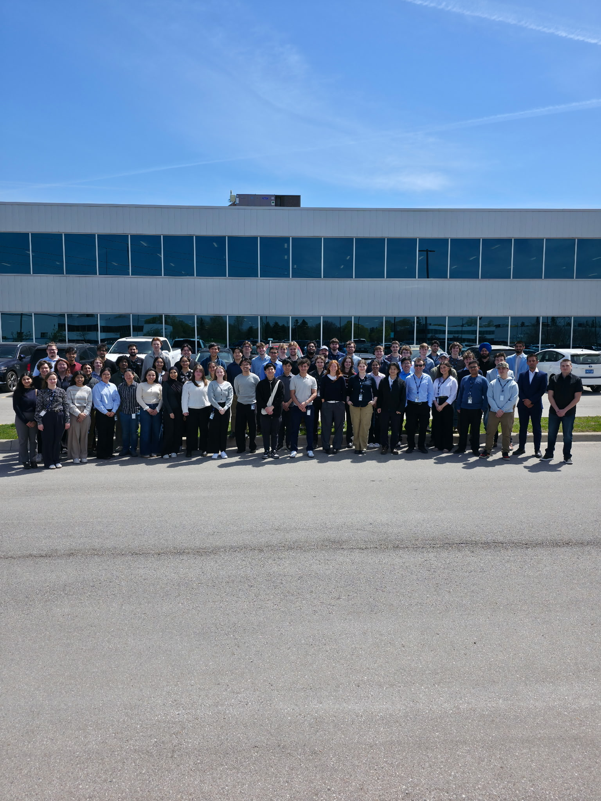

A reflection on my experience, growth, skills, and learning throughout my work term.

This website serves as a brief portfolio reflecting on my work term experience at ATS Corporation in the first four months of my eight-month work term.
I work as a Toolset Software Developer within ATS Corporation's Cambridge Life Sciences division. As a member of the Parts and Services department, I support the development and improvement of ERP software functionality, with a focus on creating efficient and user-friendly quoting and pricing solutions. The areas of Computer Science my role most heavily exercises is software development, enterprise systems and data integrity.
ATS is a global automation and technology leader, supporting the world’s most successful companies by bringing products to market in the life sciences, food & beverage, transportation, energy, and consumer product markets. ATS has branches across Canada, the United States and Europe. I completed my first term in the Cambridge Life Sciences division, in the Parts and Services department. This department is responsible for creating sales quotes and managing customer pricing and part shipping. At Cambridge Life Sciences, we focus on handling shipping through the 890 and 875 branch plants. ATS' recurring sale-to and ship-to customers include large companies across the world, such as Amazon and others.
My work involves writing formulas and code to develop new quoting and pricing strategies, with an emphasis on finding solutions that are both efficient and user-friendly. I also document how to navigate these pricing tools I develop for other users in our department to utilize, which limits as much human-error as possible. Once these users obtain the appropriate prices, they include it in their official sales quote to send out to customers for approval and confirmation prior to shipping, receiving, handling, and releasing spare parts.
Outcome: Achieved
I developed my ability to approach the pricing and quoting system from a more critical and creative perspective. The formulas and changes I developed became part of ATS's new price quoting system. I presented my ideas through walkthrough demonstrations and presentations, incorporated feedback from my team, and refined my formulas before implementing them in the new quoting environment.
Outcome: Achieved
My oral communication skills improved significantly through regular meetings, demonstrations, and presentations. Throughout the term, I presented ideas and progress to my manager and team, including pitching a new application and explaining my price quoting formulas. Feedback from my supervisor helped me become more confident in clearly and professionally communicating technical ideas.
Outcome: Achieved
I developed a much broader understanding of ATS's global operations, including its different branches, divisions, pricing systems, currencies, and regulations. This became particularly relevant when developing pricing formulas, as different branches had their own rounding rules, currencies, and regulations that needed to be considered in the quoting process.
Outcome: Achieved
I strengthened my organization and time-management skills while working primarily remotely and managing tasks with increasing independence. Regular check-ins with my supervisor, personal notes, task planning, and additional meetings when needed helped me stay organized and consistently complete work on schedule. This structure also allowed me to prepare and rehearse ideas before presenting them to the team.
Outcome: Achieved
I advanced my technical understanding of formulas, coding logic, and the development environments used by my team. Using flowcharts and logic diagrams helped me better understand complex conditions and determine which approaches would be most efficient. I also became more comfortable working within our applications and development environments, including connecting my formulas to the pricing data and processes they support.
My work term gave me experience with a variety of enterprise systems,
data analysis tools, and documentation software. I worked primarily
with JD Edwards and CPQ, while also using Databricks and Excel to
analyze and support pricing processes.
Documentation and communication
were also a major part of my work, from creating step-by-step guides
to developing demonstrations, tutorials, and visual process diagrams.
I worked primarily within JD Edwards, CPQ, and Oracle-based applications, becoming familiar with the fields, applications, and processes used by my team. I also used Orchestrator Studio to create workflows and logic for notifications and approvals, including processes involving managers, parts, and orders placed on hold. This gave me experience working with enterprise systems not only as a user, but also as someone developing and improving the processes within them.
I used Databricks to analyze order data and better understand the information behind our pricing processes. I also worked extensively with Excel spreadsheets and formulas to organize data, develop pricing logic, and test different approaches before implementing solutions. A large part of my project included developing a consistent pricing tool for both ATS Ohio sales quotes and Cambridge Life Sciences, which included handling currency exchanges, drafting formulas for Markup GM results, Unit Costs, Profit Margin and item classification.
Documentation was an important part of my work. I used OneNote, Word, and PowerPoint to document processes, create tutorials, and prepare presentations and demonstrations. It was important for me to include step-by-step user entries, self populating field information, screenshots and visuals in order to thoroughly capture the correct use of the pricing tools I developed. I also created flowcharts and visual guides using PowerPoint, Snagit, and other editing tools to make technical processes and underlying logic explanations easier for others to follow.
This co-op experience allowed me to grow significantly in both my technical and professional skills. One of my biggest areas of growth was critical and creative thinking, as the formulas and changes I developed became part of ATS's new price quoting system. I had the opportunity to present my ideas through walkthrough demonstrations and presentations, receive feedback from my team, and refine my work before implementing it into the new quoting environment. Through this process, I also strengthened my oral communication skills and became more confident in clearly explaining my ideas, progress, and technical work to managers and colleagues.
Throughout the term, I also developed a stronger understanding of ATS and its global operations. Working with different pricing systems, currencies, rounding rules, and regulations helped me understand how different branches and divisions work together. At the same time, I became more comfortable with the development environments and with using flowcharts to plan the logic behind my formulas. Managing my time through regular check-ins, structured plans, and preparation for presentations also helped me stay organized and complete my work effectively. Overall, this experience allowed me to build on my technical knowledge while developing the communication, organization, problem-solving, and professional skills that I can carry forward into my degree and future career.
My next four months at ATS will give me the opportunity to continue building on everything I have learned so far. I look forward to
refining the skills I have developed, improve the solutions I have already contributed to, and take on new challenges with a stronger
understanding of both the technical and professional side of software development.
Looking beyond this co-op, I want to carry these experiences into the rest of my Computer Science degree, future co-op opportunities, and eventually a full-time career in software development.